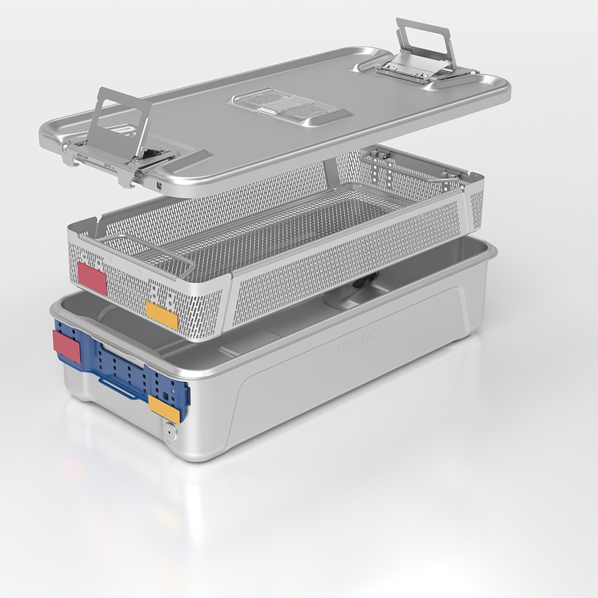

Kontejnery AESCULAP® AICON® chrání nástroje i jejich uživatele.
Kontejnery AESCULAP® AICON® chrání nástroje i jejich uživatele.
Předoperační příprava potřebných nástrojů by se s lehkým přimhouřením oka dala přirovnat práci profesionálního malíře. Však i on, než se dotkne plátna, pečlivě připravuje své štětce. A po skončení práce je nemůže jen tak ledabyle nechat ležet, ještě poskvrněné barvou. Stejně jako instrumentárium pro zdravotníka, i štětce jsou pro našeho pomyslného malíře životně důležité, cenné, a jejich náhrada představuje nemalé náklady. Mezi Vámi, kteří jste svůj život zasvětili péči o zdraví ostatních na operačních sálech, případně přímo přípravou potřebného vybavení, se teď jistě našlo mnoho těch, kteří se dokážou do takovéto „mimoborové“ metafory vcítit. Však ani Vy si při přípravě a péči o nástroje nemůžete dovolit chybovat. A i pro Vás je téma efektivní péče o instrumentárium v nemocnicích jistě věčným tématem a otázkou. Stejně tak, jako pro společnost B. Braun. Nabízíme hned několik odpovědí. A myslíme přitom nejen na nástroje, ale i na Vás.
Zkušenosti zdravotnického personálu hovoří jasně: hlavní příčinou zničení chirurgických nástrojů jsou hrubé chyby v předsterilizační přípravě, nejčastěji pak při procesu dekontaminace.
Skupina B. Braun nabízí moderní sterilizační kontejnery
Sterilizační kontejner 21. století musí splňovat jasné parametry:
- oproti starším kontejnerům snižuje čas sterilizace nástrojů
- nezatěžuje personál obtížnou manipulací
- umožňuje rychlou identifikaci nástrojů
|  | Všechny tyto zmíněné parametry a také mnoho dalšího nabízí sterilizační kontejner nejvyšší kvality AICON®, novinka v rodině kontejnerového systému AESCULAP®, kterou jsme nedávno uvedli na český i slovenský trh. Při vývoji moderního kontejnerového systému jsme spolupracovali s našimi zákazníky tak, aby odpovídal aktuálním potřebám v oblasti sterilizace. |
|---|
Váš personál jistě ocení i následující výhody těchto sterilizačních kontejnerů AICON®:
- efektivní systém zkracuje dobu sušení nástrojů
- systém identifikačních štítků zlepšuje přehlednost jednotlivých kontejnerů
- otevírání a zavírání kontejneru eliminuje riziko kontaminace materiálů určených k operačnímu výstupu
- ergonomický design integrovaných úchytů optimalizuje náročnost práce při manipulaci s kontejnery
Produkt AICON® jsme ještě před jeho uvedením na trh představovali odbornému publiku na podzim roku 2019 během mezinárodního kongresu WFHSS v Haagu. A reakce účastníků sympozia už tehdy svědčily o tom, že se naše úsilí ve vývoji moderního sterilizačního kontejneru vyplatilo. Zkušenosti z praxe pak nadšení zdravotnických profesionálů jen potvrdily.
Jako bývalá instrumentářka vidím výhody kontejneru Aicon v mnoha směrech. Nejvíce mne zaujal systém sušení EDS, který umožní zkrácení času vlastního sterilizačního procesu, a zajistí tak pro operační výkon včasné zajištění instrumentária. Efektivně se tedy využije operačního času. Dalším pozitivním prvkem je jednodušší manipulace s kontejnerem a eliminace rizika znesterilnění obsahu síta. Dostupný autorizovaný servis je nedílnou součástí komfortu pro zákazníky.
Péče o instrumentárium ovšem neskrývá jen problematiku ukládání a sterilizace nástrojů. Není zkrátka jednorázovým úkonem, ale procesem. Tento proces představuje výrazný podíl na každodenní práci zdravotnického personálu, takže musí být tak efektivní, jak jen moderní postupy umožňují. Společnost B.Braun si je všech těchto výzev vědoma. A zatímco Vy pečujete o své pacienty, my tyto výzvy překonáváme za Vás. A nabízíme řešení v podobě Fleet Care, nebo-li takzvaného fleet managementu.
Fleet management: Skupina B. Braun jako první ve střední Evropě půjčuje chirurgické nástroje

|
Fleet management kombinuje zapůjčení nových chirurgických nástrojů a kontejnerů a nepřetržitý autorizovaný servis i údržbu po celou dobu trvání kontraktu s naší společností. Jde o moderní, komplexní řešení šité na míru potřebám Vaší nemocnice. |
|---|
Jde o službu přizpůsobenou každému jednotlivému klientovi, který ocení především:
- kontinuální péči a servis
- optimalizovanou pojistnou zásobu nástrojů na centrální sterilizaci
- softwarové řešení na setování nástrojů
- sledování počtu sterilizačních kontejnerů, které vede k rovnoměrnému použití nástrojů
Samozřejmostí je i detailní zaškolení personálu nemocnice. Tuto službu už od začátku roku 2020 využívá v České republice například Nemocnice Šumperk. Místo nákladné koupě, vedení nemocnice zvolilo pronájem téměř 3500 nástrojů špičkové kvality od společnosti B.Braun. S šestiletým kontraktem se tak Nemocnice Šumperk stala prvním zdravotnickým zařízením, které v Česku a střední Evropě tento pronájem zvolilo.
Preferujete vlastní nástroje? I v případě nákupu je B. Braun dobrou volbou.
I sebe lepší péčí se nevyhneme nutnosti instrumentárium občasně obměňovat, doplňovat či nahrazovat modernějšími variantami. A někdy prostě jako představitel Vašeho zdravotnického zařízení preferujete volbu nástroje vlastnit. Už při fázi výběru můžete výrazným způsobem ovlivnit časový horizont, ve kterém budete nákup muset opakovat. Volbou správných a kvalitních nástrojů vyvinutých moderními postupy a ve spolupráci s odborníky, kteří jsou i jejich koncovými uživateli, riziko krátké životnosti zakoupeného vybavení výrazně eliminujete.
Řada SQ.line®: Prodloužení operatérovy ruky
Nástroje vysoké kvality pozná operatér už při pouhé manipulaci. Společnost B. Braun jako největší dodavatel chirurgických nástrojů na světě neustále zvyšuje kvalitu svých výrobků. A řadou SQ line nastavuje nové standardy. Nástroj už není pouhý instrument operatéra, ale je spíše prodloužením jeho ruky. Dokonalá ergonomie, perfektní úchop, jednodušší údržba i možnosti opravy. Takové, i další přednosti, nabízí řada SQ.line®.

Kontakt
Napište nám


.png)